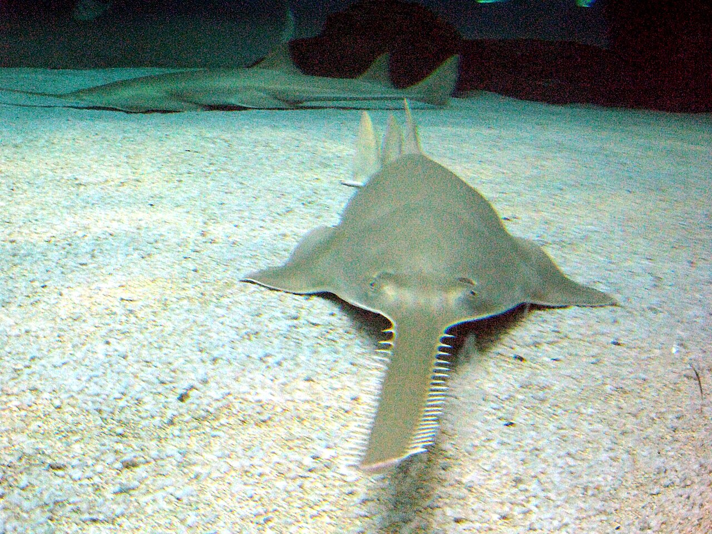
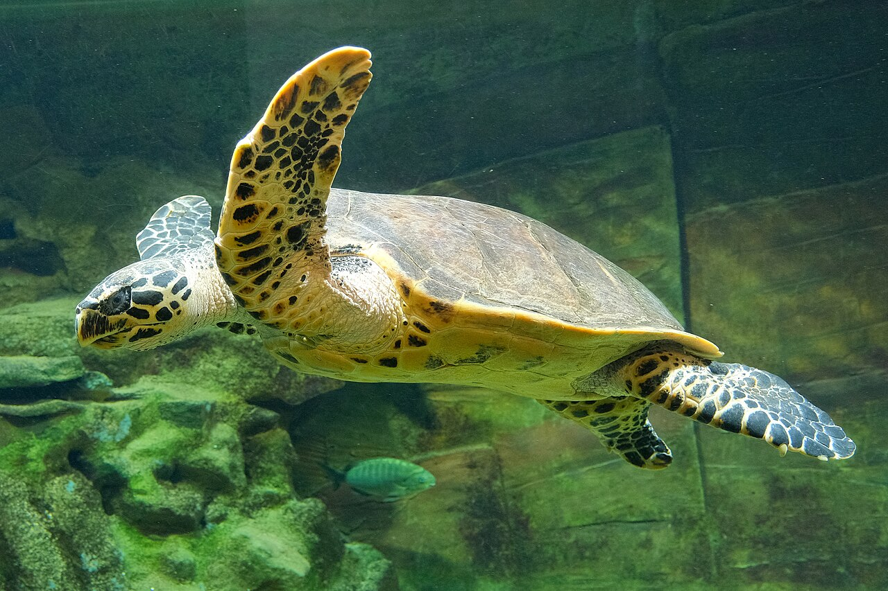
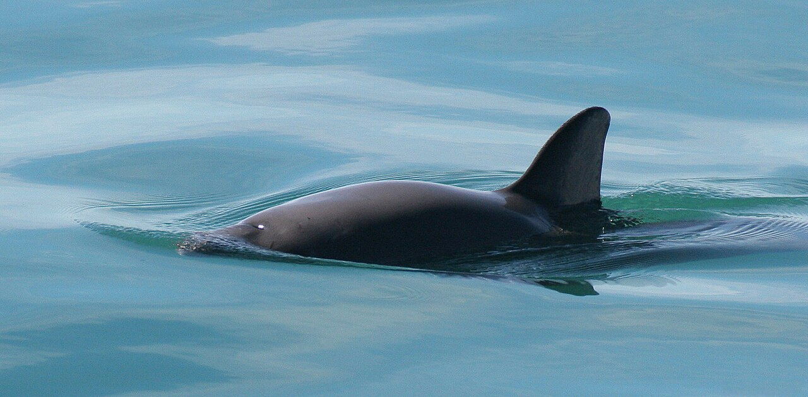

Meet the four

Sawfish
All 5 species endangeredYes, it is a ray, a flat cousin of sharks! Its saw is a long nose edged with teeth: brilliant for hunting fish. A sawfish reaches full size at about 8 to 10 years old, and its last big strongholds are northern Australia and Florida.
Photo: Flavio Ferrari, CC BY-SA 2.0, via Wikimedia Commons
{kind=link}

Hawksbill sea turtle
Critically endangeredNamed for its beak, shaped like a hawk's. For hundreds of years its patterned shell was made into jewellery and combs. A hawksbill starts having babies only at 20 to 30 years old, older than a lot of teachers have been teaching!
Photo: Pseudopanax, public domain, via Wikimedia Commons
{kind=link}

Scalloped hammerhead
Critically endangeredIts wide head is packed with super senses for finding prey. Hammerheads swim together in huge schools, which is amazing to see, and it means one boat in the wrong place can catch a whole group at once.
Photo: Kris-Mikael Krister, CC BY 2.0, via Wikimedia Commons
_Costa_Rica.jpg){kind=link}

Vaquita
Only about 10 leftThe world's smallest porpoise, and its rarest sea mammal. It lives in just one place on the whole planet, the very top of Mexico's Gulf of California, and a mother has one baby every one or two years, so every single one matters.
Photo: Paula Olson, NOAA, public domain, via Wikimedia Commons
{kind=link}
The four problems they all share
Tap or hover a card to turn it over.
Same problems, different bodies
| Problem | Sawfish | Hawksbill | Hammerhead | Vaquita |
|---|---|---|---|---|
| Nets | Saw gets tangled | Held under, away from air | Head gets stuck | Drowns in illegal gillnets |
| Hunted for | Saws and fins | Its shell (tortoiseshell) | Fins | Caught purely by mistake |
| Home in danger | Mangrove forests | Reefs and beaches | Shallow bays | Just one home on Earth |
| Grown up at | About 8 to 10 years | 20 to 30 years | Many years | 1 baby every 1 to 2 years |
The good news
We know exactly what the problems are, and protecting these animals works. Where nets are banned and nursery homes are kept safe, in places like northern Australia, Florida and guarded turtle beaches, the animals hang on. The vaquita is the starkest warning: with only about 10 left, its future depends on getting every last illegal net out of its small corner of the sea. Saving them is a choice we already know how to make.
What you can do
- Look for the sustainable seafood label when your family shops
- Keep balloons and plastic bags out of the sea, because turtles mistake them for jellyfish
- Choose souvenirs that leave shells, fins and saws on the animals
- Tell someone the vaquita's story, and help the world get to know it
Learn more & help
- Australian Marine Conservation Society
- Sea Turtle Foundation
- IUCN Red List, the world's official list of endangered animals
- And of course: play The Long Swim and meet three of them
Danger levels come from the IUCN Red List. This page is based on Mia's school research project, Caught in the Same Net.
Photo credits
Issue photos via Wikimedia Commons: turtle in ghost net by NOAA (public domain); shark fins drying by Cloneofsnake (CC BY-SA 2.0); mangroves of Maheshkhali by Ayman Nakib Badhan (CC BY-SA 4.0); hawksbill hatchlings by Marine Conservation Society Seychelles (CC BY 4.0).
.jpg){kind=link}
{kind=link}
{kind=link}
{kind=link}